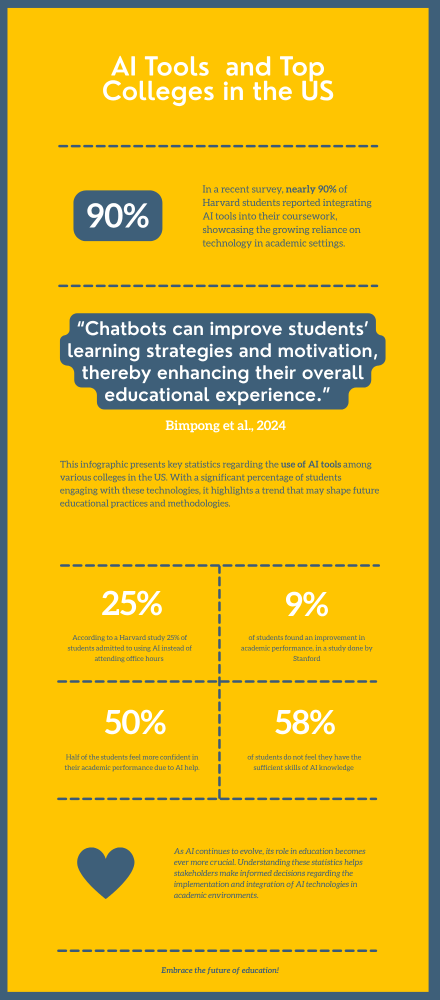
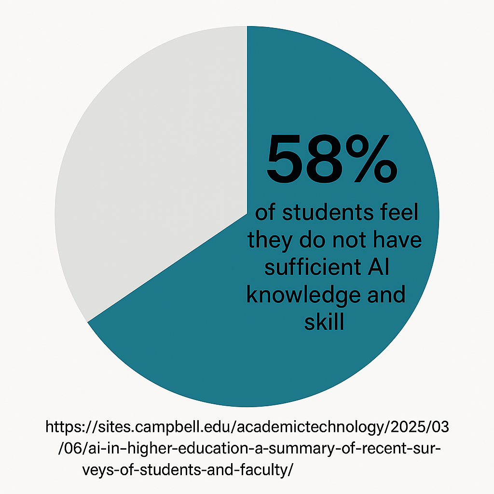
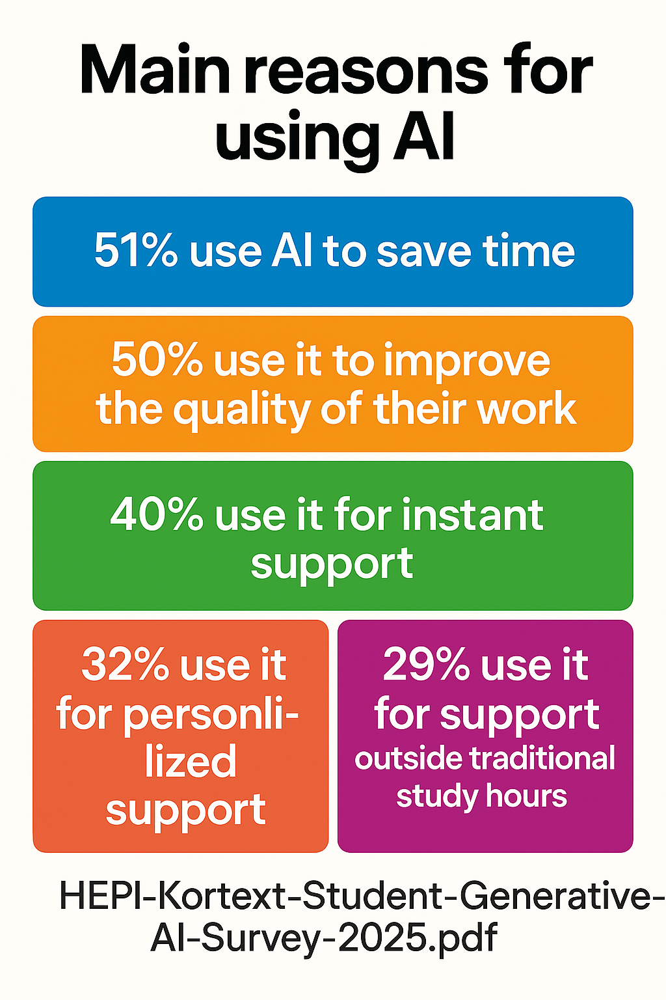

White Paper: The Shifting Role Academic Support in the Age of AI
Executive Summary
This white paper explores how artificial intelligence (AI) is reshaping student writing and academic support in higher education. With growing student adoption and institutional investment, AI tools like ChatGPT, Claude, and Perplexity are transforming the way learners brainstorm, research, and complete assignments. U.S. universities—from Harvard and Yale to MIT and Stanford—are not only embracing AI but also leading innovation through interdisciplinary programs and tutoring platforms.
Through the lens of college students' daily use, the paper examines AI’s role as a writing companion, coding assistant, personal tutor, and administrative helper.
Rather than being replaced, tutors and academic mentors can become AI translators—guiding ethical usage, deepening understanding, and fostering critical thinking. The paper concludes by encouraging a human-AI partnership, where academic support adapts to offer enriched, responsible co-learning experiences.
Introduction

As AI tools become increasingly embedded in the writing process—from brainstorming to grammar refinement—the traditional expectations of student writing will be shifting. The way students are evaluated in terms of their knowledge could change, especially as they use AI to support their growth and learning. This evolution will also impact human academic support professionals like tutors, ghostwriters and assistants. Who then must adapt to remain relevant and effective. How can academic support still stay relevant if something else can do the job for the student?
Rather than being replaced, academic support can leverage these changes to guide students in a more responsible AI co-writing. Which can foster critical thinking and help them ask better questions that help improve all levels of human society. The educational ecosystem isn’t shrinking—it’s restructuring. This paper explores how academic support professionals can design for that future. Let’s look at how students are truly using AI to help them learn in the college environment, which we then can use to change, or create new business models.
Section 1: The University Perspective — Empowering Students to Use AI Purposefully
Universities have noticed students are using AI. Because students are not just using it for its usefullness or ease, they also derive enjoyment and feel more equipped to step into a technological future(Cui, 2025). So in lieu of this, U.S. universities are not only permitting the use of AI—they’re actively enabling it, providing access and encouraging responsible integration into learning. Here is a list of top colleges and how they use AI to enhance the student and learning experience:
Harvard University
Most common AI uses by Harvard students: Information gathering (53%) and brainstorming (51%). In a 2024 undergraduate survey nearly 90% of students use generative AI in their studies; 25% of these responders to the survey reported using AI instead of attending office hours or completing required readings.
Generative AI Research Program: This program pairs undergraduates with faculty to explore GenAI in fields like architecture, medicine, and programming. This funding supports AI integration in learning and fosters faculty-undergraduate collaboration.
Kempner Institute: The Kempner Institute investigates intelligence in biological and artificial systems. Its aims are to deepen understanding of intelligence so that we can develop groundbreaking technological tools to improve human lives.
Yale University
AI Seed Grants: Offers up to $100,000 for interdisciplinary AI research initiatives.
Clarity Platform: Provides AI chatbots to assist students with research and coursework tasks.
AI Literacy Workshops: Includes one-on-one guidance to help students integrate AI tools confidently into their learning.
MIT
Generative AI Impact Consortium: It supports over 55 projects that range from creating AI tutors to innovative models in urban sustainability.
MIT’s Interaction Intelligence Course: In 2024, five student-led AI projects were accepted into NeurIPS, showcasing leadership and innovation in AI-enhanced education.
2025 Pilot Study: Over 1,000 undergraduates using an AI assistant experienced a 9% improvement in academic performance.
University of Iowa
AI-Enabled Intelligent Assistant (AIIA): Designed to adapt to individual student learning styles and integrate seamlessly with Learning Management Systems (LMS) for personalized academic support. It adapts to student learning styles, generates quizzes and flashcards and integrates LMS.

We've just read how universities are trying to incorporate AI in the student learning experience. And this only in the last three to five years. The numbers of using AI in colleges will only increase especially when AI takes a more personal and human-like approach. These stories reveal an academic landscape where students are not just users of AI—they are collaborators, researchers, and co-designers of its future. As elite institutions widen access to AI resources and build responsible use frameworks, students are gaining confidence, clarity, and new cognitive tools that are fundamentally transforming the learning experience.
Section 2: How U.S. Students Use AI in Colleges from an AI perspective
This section takes a look at how students use AI in everyday situations in university. It is true that universities are creating space for AI in the classroom, but how do students use it to learn, understand and manage their own college experiences? We went to various AI platforms to look at their data and what prompts students input into AI various platforms like ChatGPT etc.
AI as a Writing Companion
ChatGPT usage among students: Over one-third of U.S. college-aged students (18–24) use ChatGPT regularly, with more than 25% of their messages focused on learning, tutoring, or schoolwork.
Writing AI tools in academia: Students rely on writing AI to draft, revise, and structure essays and academic projects, especially in fields like the humanities and social sciences.
AI tools for academic work: 43% of U.S. college students have used ChatGPT or similar platforms for academic purposes; half of those used the tools to complete assignments or exams.
AI for Coding
AI use by student discipline: Non-STEM students predominantly use AI for writing-related tasks, while STEM students gravitate toward coding and technical problem-solving.
AI in development workflows: Students document how AI assists with coding and debugging as they build software—integrating AI tools into their development process.
AI for Academic Research
Perplexity and Elicit for research: These AI tools are widely used by students for citation-linked results and literature reviews. They streamline the research process and support claim validation, reshaping the ghostwriter’s role into one of critique and refinement.
Campbell University study: Found that 86% of students use AI in their studies, with many relying on these tools specifically for research purposes.
AI as a Personal Tutor
Claude and AIIA as virtual assistants: Offer concept explanations, personalized learning pathways, and generate quizzes to support student understanding and retention.
Research Rabbit: Delivers visual mapping of ongoing research, helping students discover data sources without performing the research itself—enhancing their exploration process.
Automating Admin Work
FastBots: A no-code assistant AI platform that helps streamline administrative tasks like registration, financial aid, and scheduling by creating custom chatbots trained on institutional data.
Numerous: An assistant AI tool designed to automate routine academic processes, reducing friction while maintaining the importance of human-led academic strategy and ethical oversight.
Section 3: What AI Platforms Are Used for Which Tasks?
In this section we explore how students use different AI interfaces to accomplish various tasks. Even though universities are building their own versions of AI to help with tasks like registration and college application, tasks like writing and student admin(for example creating study plans, summaries transcriptions) are still performed by AI that is readilly available on the internet.
The surge in student AI adoption may seem threatening, but it opens new avenues for professionals:

AI-Enhanced Tutoring: Teach students to use AI ethically and effectively, interpret AI-generated content, and provide constructive feedback on AI-assisted drafts. Academic support can help improve quality of the students' work.
AI Literacy Workshops: Offer training sessions that help both students and staff gain essential AI skills for academic success and future employment. Skills that could help them save time.
AI-Assisted Ghostwriting: Incorporate AI tools into your content creation process to boost efficiency—while maintaining human oversight for clarity, tone, and ethics.
Consulting on AI Policy: Provide guidance to institutions or student organizations on responsible and equitable AI usage practices.
Specialized Content Creation: Use AI to develop personalized study materials—like summaries, interactive assessments, or visual aids—leveraging your subject-matter expertise for high-impact learning.
AI Translators: Embrace the evolving role of tutors as AI translators—helping students critically engage with AI-generated output and enhance their learning experience.
Why There Is Hope: The Human-AI Partnership
Despite AI’s rapid adoption, students still value human guidance. Many are concerned about AI’s limitations—bias, inaccuracy, and academic misconduct risks. Demand for nuanced feedback and ethical guidance is rising as institutions tighten assessment integrity policies.